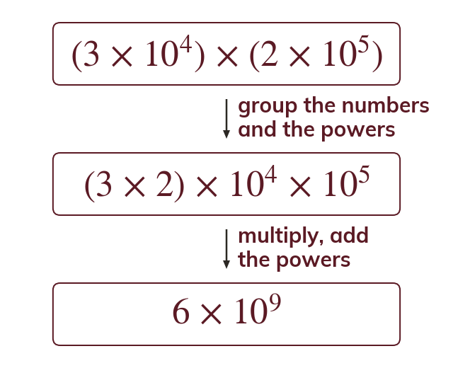
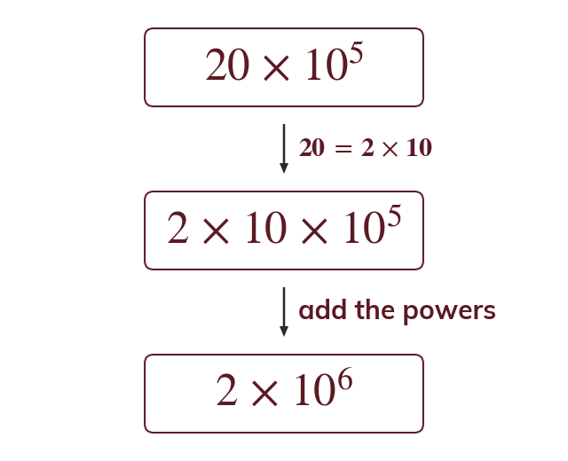
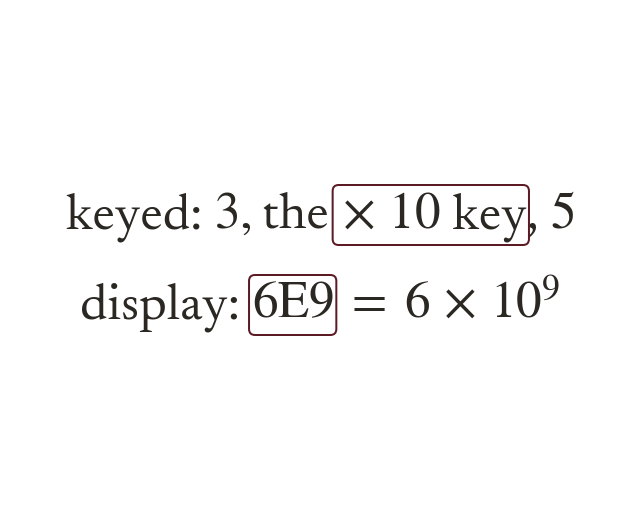
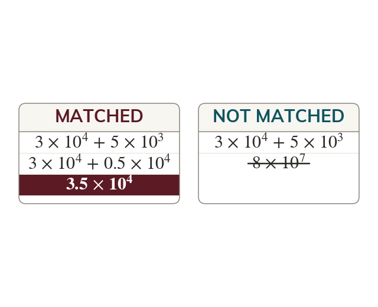
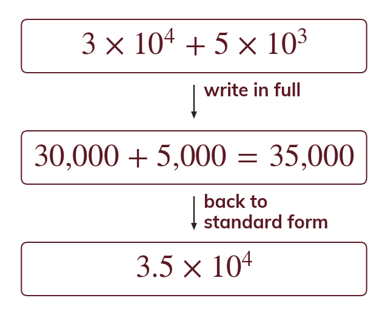

Multiply a, add the powers
Multiplying numbers in standard form multiplies the values of a and adds the powers. Dividing divides the values of a and subtracts the powers.
Scientists multiply, divide and add numbers such as the mass of the Earth every day. Working with a and the power separately keeps those calculations short.
Work down the page at your own pace. Write every answer in your book first, then click to check it.
Read each card, then follow the worked examples one step at a time.

Multiplying numbers in standard form multiplies the values of a and adds the powers. Dividing divides the values of a and subtracts the powers.

The answer is rewritten if a is no longer between and
So becomes

The key enters the power of
Key as
A display of means
Pick an answer. If it's wrong, the feedback tells you which mistake it was.
Read each card, then follow the worked examples one step at a time.

Adding or subtracting needs both numbers written with the same power of first. Then the values of a are added, and the power stays as it is.

Or write both numbers in full and add. Then write the total back in standard form.
Pick an answer. If it's wrong, the feedback tells you which mistake it was.
Finished? Next lesson: 10.11.1 Surface Area of Solids.
For each skill, tap the one that is true for you today. Your Revise pages start with anything you mark Not yet.
Your ratings are saved on this device only.
Log in, then search for a code to practise that skill.